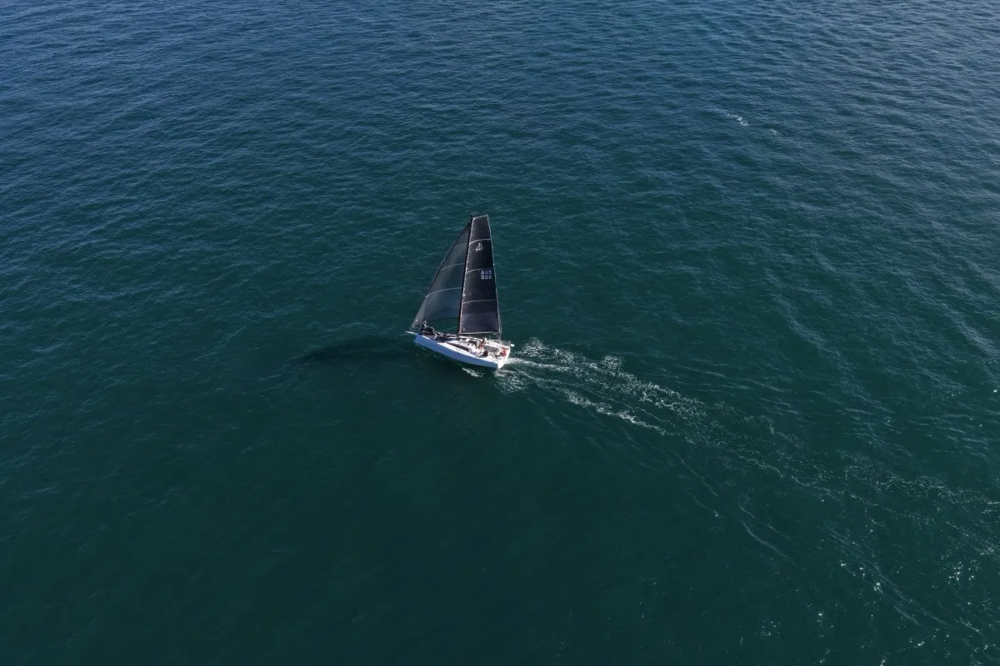

The one that confuses my family the most! - "What the heck is a spinnaker Annie!?"
Here's the short version. They're the big kites flown from the front of the boat (often in fun colors) and are used for downwind sailing. They come in three main flavours: symmetric spinnakers, asymmetric spinnakers, and code zeros.
1. The symmetric spinnaker
This is the classic - the big balloon-shaped sail you see on traditional offshore boats running dead downwind. It's symmetric because the left side mirrors the right side: same shape, same dimensions, same everything. It's flown from a pole that pushes one corner of the sail out to windward, so the wind can blow into it square-on.
Symmetrics are brilliant in their sweet spot - true wind angle of about 150° to 180°, which is to say, the wind right behind you. They project a huge amount of sail area away from the boat and pull you downwind like a powerful parachute.
The cost is operational complexity. You need a pole, you need to gybe the pole every time you change direction. On a short-handed boat like Employment Hero Alliance (just two of us), that's a process. Worth it on the right angle; an enormous faff at the wrong one.
2. The asymmetric spinnaker
The asymmetric is what most modern racing boats - including the Dehler 30 OD - use as their primary downwind weapon. It looks like a spinnaker but it's cut more like a huge, distended jib. The two sides are not symmetric: there's a luff (the leading edge) and a leech (the trailing edge), just like a normal headsail.
It flies from a fixed point on the bow (or a retractable bowsprit), no pole required. You tack the sail down at the bow and trim it like a giant genoa.
The trade-off is that you can't run as deep. An asymmetric wants the wind on the side of the boat, somewhere between 100° and 150° true. To get from A to B downwind, you sail a series of hot reaches and gybe between them - slightly more distance covered, but a lot more speed. Net result: usually faster overall, and a hundred times easier for a short-handed crew.
3. The code zero
The code zero is the odd one out. It's technically classified as a spinnaker in most rating systems (a delightful piece of rule-bending) but it functions like a very large, very flat genoa. Where the other two are designed for the wind behind you, a code zero is designed for the wind just forward of the beam - close reaching in light air, where a normal genoa would be too small but a spinnaker would collapse.
So which one do I use on Alliance?

The Dehler 30 OD is designed for short-handed offshore racing, and that design philosophy makes the choice for us. We carry two asymmetric sails (an A2 for lighter conditions and an A5 for heavier) and a code zero (for wind on your hip). No pole, no symmetric.
Quick reference
- Symmetric - runs deepest (150°–180°), needs a pole, maximum sail area, and maximum process.
- Asymmetric - broad reaching to deep (100°–150°), no pole, and short-handed friendly.
- Code zero - close reaching in light air (60°–90°), flat cut, and lives on a furler.
- Rule of thumb - if you can feel the wind on your face, you're in code-zero territory; if it's on the back of your neck, you're in spinnaker territory.
When things go wrong
Spinnakers are the most powerful and the most dramatic sails on the boat. When they go right, they're exhilarating. When they go wrong, they go wrong fast. Knowing what can happen - and how to respond - is as important as knowing how to fly them in the first place.
The broach. This is the big one. A broach happens when the spinnaker overpowers the rudder and the boat rounds up into the wind, heeling hard onto its side. It usually happens in gusts, especially when the helmsperson is slow to bear away or the sheet isn't eased quickly enough. The boat suddenly swings broadside to the wind, heels to an alarming angle, and the spinnaker flogs violently overhead. The fix is prevention: ease the sheet in gusts before they overpower you, bear away early, and keep the boat as flat as possible. If you do broach, release the sheet completely - let it run - and the boat will come back upright.
The wrap. A spinnaker wrap happens when the sail twists around the forestay or around itself, usually during a gybe or in a lull when the sail collapses and then refills twisted. It turns your spinnaker into a tight, useless spiral that you can't hoist or drop. On a double-handed boat, this is a serious problem because you may not be able to send someone safely to the bow to unwrap it in heavy conditions. Prevention: keep the sail full during manoeuvres and don't let it collapse. If it does wrap, try sailing deeper to unload the pressure, then slowly unwind it by sheeting from alternating sides.
The blowout. High loads and ageing cloth eventually meet, and the sail tears. It usually goes along a seam or at a stress point like the clew or tack. If a spinnaker starts to rip, drop it immediately - the tear will only get bigger under load. We carry a basic sail repair kit on Alliance (sticky-back Dacron tape) that can get a torn sail back in service for light conditions, but anything structural needs a sailmaker.